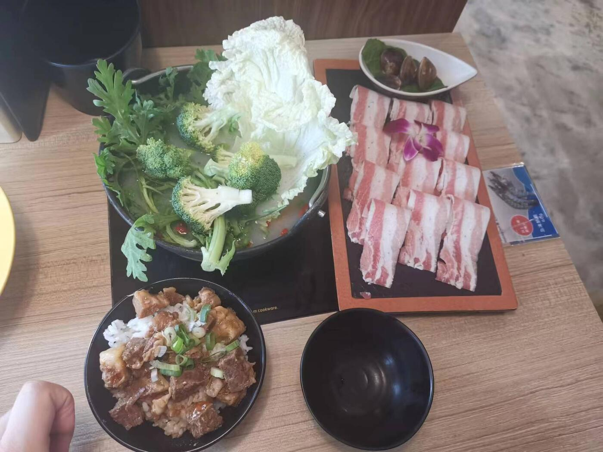
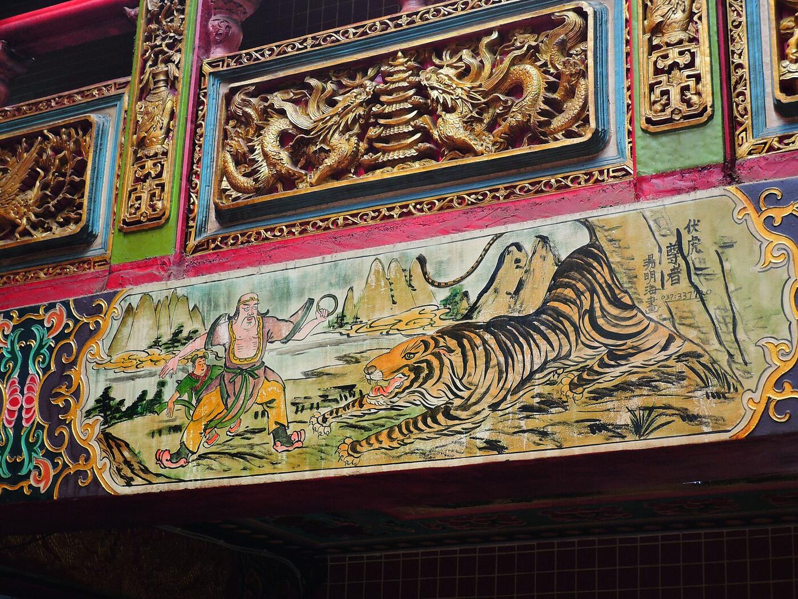
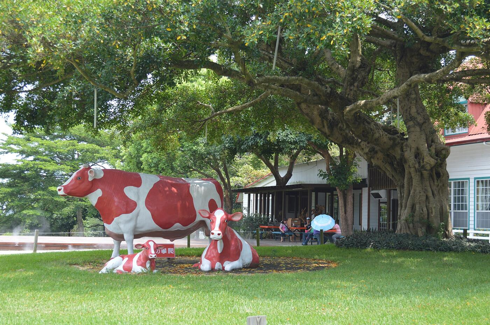
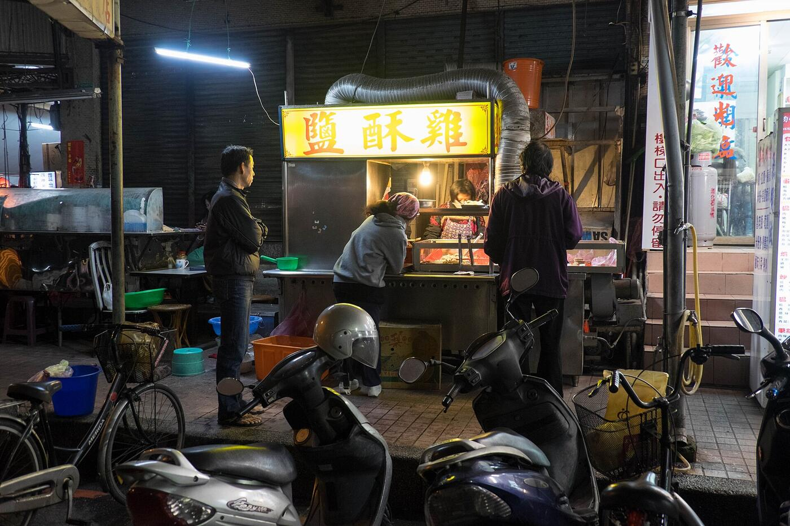
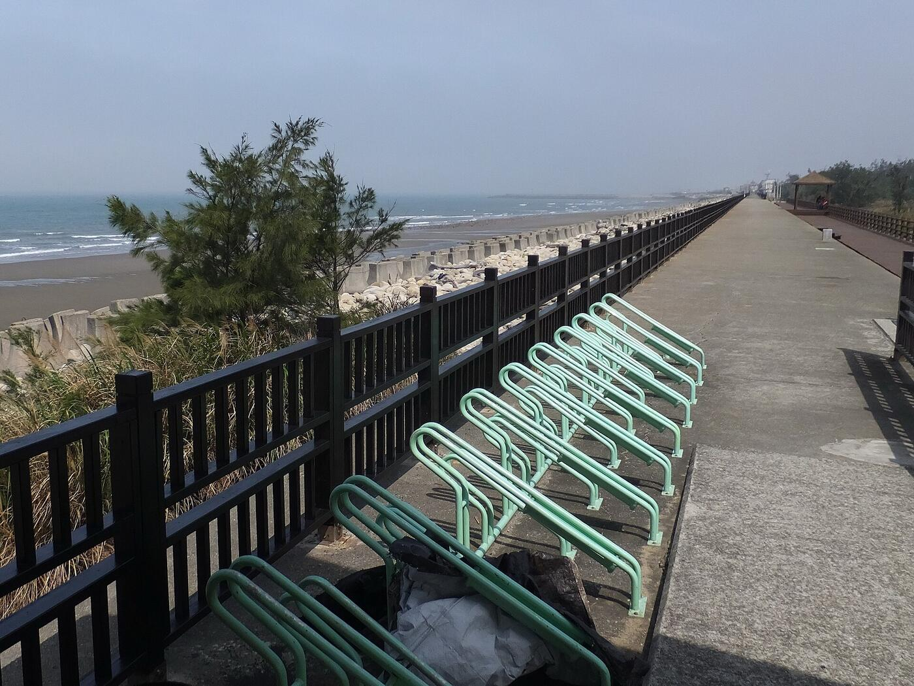
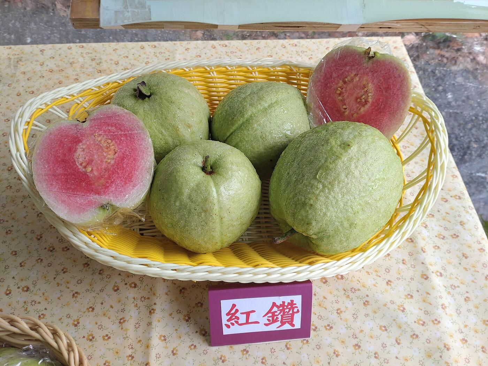

三天,三段路
第一天買齊食材回民宿煮火鍋,第二天拜媽祖、逛牧場、吃海鮮,第三天睡飽吃完午餐再回家。
- 01三義美食 → 伴手禮 → 民宿火鍋客家土雞麵、垂坤、全聯採買、火鍋派對
- 02白沙屯媽祖 → 飛牛牧場 → 苑裡海鮮拱天宮、老街午餐、動物互動、宵夜
- 03悠閒早餐 → 苑裡午餐 → 快樂返程附近散步、紅芭樂創意料理
住宿汐X光包棟民宿
天數三天兩夜
晚餐Day 1 火鍋 · Day 2 海鮮
早餐民宿自理(全聯買)
01
DAY 1
三義美食、伴手禮、民宿火鍋
先吃一碗客家土雞麵,買好伴手禮和兩天份的食材,下午入住,晚上在民宿圍爐煮火鍋。
上午至中午 · 前往三義
11:30–12:30
中午至下午 · 採買伴手禮與食材
12:45–13:30
13:30–14:30
🍲 火鍋食材
🍳 早餐食材
下午 · 入住
15:00 之後
入住汐X光包棟民宿
辦理入住,整理行李,稍作休息。

晚上 · 民宿火鍋派對
18:00–20:00
民宿火鍋晚餐
大家一起備料、煮火鍋,在包棟空間享受美食與團聚時光。
20:00 之後
自由活動
聊天、玩桌遊、看電影、吃零食,享受悠閒的民宿夜晚。
02
DAY 2
白沙屯媽祖、老街美食、飛牛牧場
早上參拜拱天宮、在老街吃午餐,下午到飛牛牧場看鴨 BB、餵小牛,傍晚回苑裡吃海鮮。
早上 · 民宿早餐與白沙屯
08:00–09:00
民宿早餐
吃前一天準備好的早餐,吃飽準備出發。
09:15–11:15

中午 · 白沙屯老街
11:15–12:45
白沙屯老街午餐
在老街找喜歡的在地美食和小吃,飯後稍微逛逛,感受白沙屯的在地風情。
下午 · 飛牛牧場
13:15–16:30

傍晚 · 苑裡晚餐
17:15–18:45
晚上 · 宵夜回民宿
19:00 之後
買宵夜,回民宿
鹽酥雞、炸物、滷味、雞排、飲料和零食,帶回民宿邊吃邊聊,享受旅行的第二個晚上。

03
DAY 3
悠閒早餐、苑裡午餐、快樂返程
不趕行程:吃早餐、收行李、附近散步,午餐吃紅芭樂創意料理再回家。
早上 · 早餐與整理行李
08:00–09:00
民宿早餐
吃早餐、整理行李,確認個人物品都收齊。
09:30–11:00
自由活動
附近散步拍照,或在返程途中補買伴手禮。

中午 · 苑裡午餐
11:30–13:00

下午 · 返程
13:00 之後
快樂返程
帶著滿滿的美食回憶、伴手禮和照片,開心回家。
行前準備清單
勾選狀態只存在這支手機的瀏覽器裡。